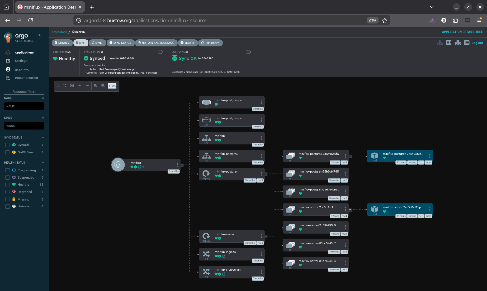
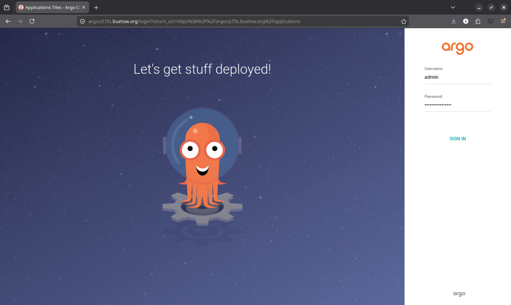
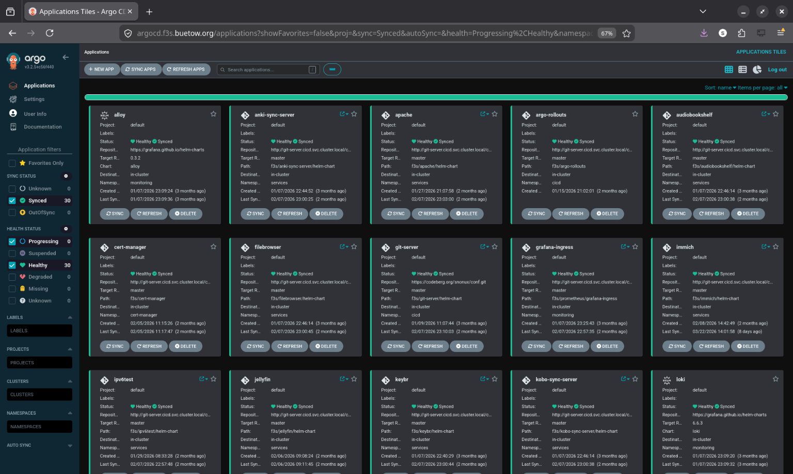

f3s: Kubernetes with FreeBSD - Part 9: GitOps with ArgoCD
Published at 2026-04-02T00:00:00+03:00
This is the 9th post in the f3s series about my self-hosting home lab. f3s? The "f" stands for FreeBSD, and the "3s" stands for k3s, the Kubernetes distribution I use on FreeBSD-based physical machines.
2024-11-17 f3s: Kubernetes with FreeBSD - Part 1: Setting the stage
2024-12-03 f3s: Kubernetes with FreeBSD - Part 2: Hardware and base installation
2025-02-01 f3s: Kubernetes with FreeBSD - Part 3: Protecting from power cuts
2025-04-05 f3s: Kubernetes with FreeBSD - Part 4: Rocky Linux Bhyve VMs
2025-05-11 f3s: Kubernetes with FreeBSD - Part 5: WireGuard mesh network
2025-07-14 f3s: Kubernetes with FreeBSD - Part 6: Storage
2025-10-02 f3s: Kubernetes with FreeBSD - Part 7: k3s and first pod deployments
2025-12-07 f3s: Kubernetes with FreeBSD - Part 8: Observability
2026-04-02 f3s: Kubernetes with FreeBSD - Part 9: GitOps with ArgoCD (You are currently reading this)


Table of Contents
Introduction
In previous posts, I deployed applications to the k3s cluster using Helm charts and Justfiles--running just install or just upgrade to push changes to the cluster. That worked, but it had some drawbacks:
- No single source of truth--cluster state depends on which commands were run and when
- Every change requires manually running commands
- No easy way to tell if the cluster drifted from the desired config
- Rolling back means re-running old Helm commands
- No audit trail for who changed what
So I migrated everything to GitOps with ArgoCD. Now the Git repo is the single source of truth, and ArgoCD keeps the cluster in sync automatically.
GitOps in a Nutshell
Describe your entire desired state in Git, and let an agent in the cluster pull that state and reconcile it continuously. Every change goes through a commit, so you get version history, collaboration, and rollback for free.
For Kubernetes specifically:
- All manifests, Helm charts, and config live in a Git repo
- ArgoCD watches that repo
- Push a change, ArgoCD applies it
- If someone manually tweaks something in the cluster, ArgoCD detects the drift and reverts it
ArgoCD
ArgoCD is a GitOps CD tool for Kubernetes. It runs as a controller in the cluster, constantly comparing what's running against what's in Git.
ArgoCD Documentation
The features I care about most for f3s:
- Automatic sync--monitors Git and applies changes to the cluster
- Application CRDs--each app is a Kubernetes custom resource
- Health checks--knows whether an app is healthy or degraded
- Web UI--visual overview of all applications and their sync status
- Sync waves and hooks--control deployment order and run post-deploy jobs
- Multi-source--combine upstream Helm charts with custom manifests
Why Bother for a Home Lab?
Honestly, the biggest reason is disaster recovery. If the cluster dies, I can:
- Bootstrap a fresh k3s cluster
- Install ArgoCD
- Point it at the Git repo
- Everything deploys automatically
That's it. No "let me check my shell history to remember how I set this up."
It's also a great way to learn. Setting up GitOps for real--even on a small cluster--teaches you things you won't pick up from tutorials alone. Debugging sync issues, figuring out sync waves, dealing with secrets management--all stuff that's directly applicable at work too.
Beyond that: push to Git, things deploy. No SSH'ing to a workstation to run Helm commands. And if I manually tweak something while debugging and forget about it, ArgoCD reverts it back to the desired state. That's happened more than once.
Deploying ArgoCD
ArgoCD manages everything else via GitOps, but ArgoCD itself needs a bootstrap. Chicken-and-egg problem.
The installation lives in the config repo:
codeberg.org/snonux/conf/f3s/argocd
I deployed it using Helm via a Justfile:
$ cd conf/f3s/argocd
$ just install
helm repo add argo https://argoproj.github.io/argo-helm
helm repo update
kubectl create namespace cicd
kubectl apply -f persistent-volumes.yaml
helm install argocd argo/argo-cd --namespace cicd -f values.yaml
kubectl apply -f ingress.yaml
Some highlights from values.yaml:
Persistent storage for the repo-server so cloned Git repos survive pod restarts:
repoServer:
volumes:
- name: repo-server-data
persistentVolumeClaim:
claimName: argocd-repo-server-pvc
volumeMounts:
- name: repo-server-data
mountPath: /home/argocd/repo-cache
env:
- name: XDG_CACHE_HOME
value: /home/argocd/repo-cache
Server runs in insecure mode since TLS is terminated by the OpenBSD edge relays (same pattern as all other f3s services):
server:
insecure: true
configs:
params:
server.insecure: true
Dex (SSO) and notifications are disabled--overkill for a single-user home lab:
dex:
enabled: false
notifications:
enabled: false
The admin password is auto-generated on first install and stored in argocd-initial-admin-secret. It's preserved across Helm upgrades, so no manual secret creation needed:
$ just get-password
# Reads from argocd-initial-admin-secret
Accessing ArgoCD
After deployment, ArgoCD runs in the cicd namespace:
$ kubectl get pods -n cicd
NAME READY STATUS RESTARTS AGE
argocd-application-controller-0 1/1 Running 0 45d
argocd-applicationset-controller-66d6b9b8f4-vhm9k 1/1 Running 0 45d
argocd-redis-77b8d6c6d4-mz9hg 1/1 Running 0 45d
argocd-repo-server-5f98f77b97-8xtcq 1/1 Running 0 45d
argocd-server-6b9c4b4f8d-kxw7p 1/1 Running 0 45d

The ingress exposes both a WAN and LAN endpoint:
# WAN access (via OpenBSD relayd)
- host: argocd.f3s.foo.zone
# LAN access (via FreeBSD CARP VIP, with TLS)
- host: argocd.f3s.lan.foo.zone
In-Cluster Git Server
I didn't want ArgoCD pulling from Codeberg over the internet every time it checks for changes. If Codeberg is down (or my internet is), the cluster can't reconcile. So I set up a Git server inside the cluster itself.
codeberg.org/snonux/conf/f3s/git-server (at 190473b)
The git-server runs as a single pod in the cicd namespace with two containers sharing a PVC:
- An SSH git server (Alpine + OpenSSH + git-shell) for pushing changes from my laptop
- A CGit web UI with git-http-backend (nginx + fcgiwrap) for browsing repos and HTTP clones
ArgoCD uses the HTTP backend to clone repos. Most Application manifests point at:
http://git-server.cicd.svc.cluster.local/conf.git
For pushing, I use SSH via a NodePort (30022). The git user is locked down to git-shell--no actual shell access. SSH keys are managed through a Kubernetes Secret.
There's a chicken-and-egg situation here. The git-server's own ArgoCD Application manifest points at Codeberg (not at itself), since ArgoCD needs to bootstrap the git-server before it can use it:
# argocd-apps/cicd/git-server.yaml
source:
repoURL: https://codeberg.org/snonux/conf.git
targetRevision: master
path: f3s/git-server/helm-chart
Once the pod is up, all other apps use the in-cluster URL. The dependency chain is: Codeberg -> git-server -> everything else.
The repo storage lives on NFS. Initial setup was just cloning the Codeberg repo as a bare repo into the NFS volume, then pointing my laptop's git remote at the NodePort:
$ git remote add f3s f3s-git:/repos/conf.git
$ git push f3s master
ArgoCD detects the change within a few minutes and syncs. No internet required. The whole thing is intentionally minimal--no database, no accounts, no webhooks. Just git over SSH for writes and HTTP for reads.
Repository Organization
I reorganized the config repo for GitOps. Application manifests are grouped by namespace:
/home/paul/git/conf/f3s/
├── argocd-apps/
│ ├── cicd/ # CI/CD tooling (2 apps)
│ │ ├── argo-rollouts.yaml
│ │ └── git-server.yaml
│ ├── infra/ # Infrastructure (4 apps)
│ │ ├── cert-manager.yaml
│ │ ├── pkgrepo.yaml
│ │ ├── registry.yaml
│ │ └── traefik-config.yaml
│ ├── monitoring/ # Observability stack (6 apps)
│ │ ├── alloy.yaml
│ │ ├── grafana-ingress.yaml
│ │ ├── loki.yaml
│ │ ├── prometheus.yaml
│ │ ├── pushgateway.yaml
│ │ └── tempo.yaml
│ ├── services/ # User-facing applications (18 apps)
│ │ ├── anki-sync-server.yaml
│ │ ├── apache.yaml
│ │ ├── audiobookshelf.yaml
│ │ ├── filebrowser.yaml
│ │ ├── immich.yaml
│ │ ├── ipv6test.yaml
│ │ ├── jellyfin.yaml
│ │ ├── keybr.yaml
│ │ ├── kobo-sync-server.yaml
│ │ ├── miniflux.yaml
│ │ ├── navidrome.yaml
│ │ ├── opodsync.yaml
│ │ ├── pihole.yaml
│ │ ├── radicale.yaml
│ │ ├── syncthing.yaml
│ │ ├── tracing-demo.yaml
│ │ ├── wallabag.yaml
│ │ └── webdav.yaml
│ └── test/ # Test/example applications
├── miniflux/ # Per-app directories (unchanged)
│ ├── helm-chart/
│ │ ├── Chart.yaml
│ │ ├── values.yaml
│ │ └── templates/
│ └── Justfile
├── prometheus/
│ ├── manifests/ # Additional manifests for multi-source
│ └── Justfile
└── ...
The per-app directories (miniflux, prometheus, etc.) stayed the same--ArgoCD just points at the existing Helm charts. The main addition is the argocd-apps/ tree and manifests/ subdirectories for complex apps.
Migrating an App: Miniflux as Example
I migrated all apps one at a time. Same procedure for each--here's miniflux as an example.
Before ArgoCD, the Justfile looked like this:
install:
kubectl apply -f helm-chart/persistent-volumes.yaml
helm install miniflux ./helm-chart --namespace services
upgrade:
helm upgrade miniflux ./helm-chart --namespace services
uninstall:
helm uninstall miniflux --namespace services
Workflow: edit chart, run just upgrade, hope you didn't forget anything.
I created an Application manifest--this tells ArgoCD where the Helm chart lives and how to sync it:
apiVersion: argoproj.io/v1alpha1
kind: Application
metadata:
name: miniflux
namespace: cicd
finalizers:
- resources-finalizer.argocd.argoproj.io
spec:
project: default
source:
repoURL: http://git-server.cicd.svc.cluster.local/conf.git
targetRevision: master
path: f3s/miniflux/helm-chart
destination:
server: https://kubernetes.default.svc
namespace: services
syncPolicy:
automated:
prune: true
selfHeal: true
syncOptions:
- CreateNamespace=false
retry:
limit: 3
backoff:
duration: 5s
factor: 2
maxDuration: 1m
Then applied it:
# 1. Apply the Application manifest
$ kubectl apply -f argocd-apps/services/miniflux.yaml
application.argoproj.io/miniflux created
# 2. Verify ArgoCD adopted the existing resources
$ argocd app get miniflux
Name: miniflux
Sync Status: Synced to master (4e3c216)
Health Status: Healthy
# 3. Test that the app still works
$ curl -I https://flux.f3s.foo.zone
HTTP/2 200
About 10 minutes, zero downtime. ArgoCD saw that the running resources already matched the Helm chart in Git and just adopted them.
After that, the Justfile is just utility commands--no more install/upgrade/uninstall:
status:
@kubectl get pods -n services -l app=miniflux-server
@kubectl get pods -n services -l app=miniflux-postgres
@kubectl get application miniflux -n cicd \
-o jsonpath='Sync: {.status.sync.status}, Health: {.status.health.status}'
sync:
@kubectl annotate application miniflux -n cicd \
argocd.argoproj.io/refresh=normal --overwrite
logs:
kubectl logs -n services -l app=miniflux-server --tail=100 -f
restart:
kubectl rollout restart -n services deployment/miniflux-server
port-forward port="8080":
kubectl port-forward -n services svc/miniflux {{port}}:8080
psql:
kubectl exec -it -n services deployment/miniflux-postgres -- psql -U miniflux
New workflow: edit chart, commit, push. ArgoCD picks it up within a few minutes. Run just sync if you're impatient.
Migration Order
I started with the simplest services (miniflux, wallabag, radicale, etc.)--apps with straightforward Helm charts and no complex dependencies. This let me validate the pattern before touching anything critical.
After that: infrastructure apps (registry, cert-manager, pkgrepo, traefik-config), then the monitoring stack (tempo, loki, alloy, and finally prometheus--the most complex one), and last the CI/CD tools (git-server, argo-rollouts).
Complex Migration: Prometheus Multi-Source
Prometheus was the tricky one--it combines an upstream Helm chart with a bunch of custom manifests (recording rules, dashboards, persistent volumes, a post-sync hook to restart Grafana).
ArgoCD's multi-source feature made this manageable:
apiVersion: argoproj.io/v1alpha1
kind: Application
metadata:
name: prometheus
namespace: cicd
spec:
sources:
# Source 1: Upstream Helm chart
- repoURL: https://prometheus-community.github.io/helm-charts
chart: kube-prometheus-stack
targetRevision: 55.5.0
helm:
releaseName: prometheus
valuesObject:
kubeEtcd:
enabled: true
endpoints:
- 192.168.2.120
- 192.168.2.121
- 192.168.2.122
# ... hundreds of lines of config
# Source 2: Custom manifests from Git
- repoURL: http://git-server.cicd.svc.cluster.local/conf.git
targetRevision: master
path: f3s/prometheus/manifests
syncPolicy:
automated:
prune: false # Manual pruning--too risky for the monitoring stack
selfHeal: true
syncOptions:
- ServerSideApply=true
The prometheus/manifests/ directory has 13 files. Each one has a sync wave annotation that controls when it gets deployed:
f3s/prometheus/manifests/
├── persistent-volumes.yaml # Wave 0
├── grafana-restart-rbac.yaml # Wave 0
├── additional-scrape-configs-secret.yaml # Wave 1
├── grafana-datasources-configmap.yaml # Wave 1
├── freebsd-recording-rules.yaml # Wave 3
├── openbsd-recording-rules.yaml # Wave 3
├── zfs-recording-rules.yaml # Wave 3
├── argocd-application-alerts.yaml # Wave 3
├── epimetheus-dashboard.yaml # Wave 4
├── zfs-dashboards.yaml # Wave 4
├── argocd-applications-dashboard.yaml # Wave 4
├── node-resources-multi-select-dashboard.yaml # Wave 4
├── prometheus-nodeport.yaml # Wave 4
└── grafana-restart-hook.yaml # Wave 10 (PostSync)
Sync Waves
By default, ArgoCD deploys everything at once in no particular order. Fine for simple apps, but Prometheus breaks--a PVC can't bind if the PV doesn't exist yet, and a PrometheusRule can't be created if the CRD hasn't been registered.
Sync waves fix this. You slap an annotation on each resource:
annotations:
argocd.argoproj.io/sync-wave: "3"
ArgoCD deploys all wave 0 resources first, waits until they're healthy, then moves to wave 1, waits again, and so on. Resources without the annotation default to wave 0.
For the Prometheus stack, the waves look like this:
- Wave 0: PersistentVolumes, RBAC--infrastructure that everything else depends on
- Wave 1: Secrets, ConfigMaps--config that Prometheus and Grafana need at startup
- Wave 3: PrometheusRule CRDs--recording rules for FreeBSD, OpenBSD, ZFS, ArgoCD (the operator from wave 0 needs to be running first)
- Wave 4: Dashboard ConfigMaps and nodeport config
- Wave 10: PostSync hook--a Job that runs after all waves complete
ArgoCD also supports lifecycle hooks (PreSync, Sync, PostSync) that run Jobs at specific points. The Grafana restart hook runs after every sync so Grafana picks up updated datasources and dashboards:
apiVersion: batch/v1
kind: Job
metadata:
name: grafana-restart-hook
namespace: monitoring
annotations:
argocd.argoproj.io/hook: PostSync
argocd.argoproj.io/hook-delete-policy: BeforeHookCreation
argocd.argoproj.io/sync-wave: "10"
spec:
template:
spec:
serviceAccountName: grafana-restart-sa
restartPolicy: OnFailure
containers:
- name: kubectl
image: bitnami/kubectl:latest
command:
- /bin/sh
- -c
- |
kubectl wait --for=condition=available --timeout=300s \
deployment/prometheus-grafana -n monitoring || true
kubectl delete pod -n monitoring \
-l app.kubernetes.io/name=grafana --ignore-not-found=true
backoffLimit: 2
The Result
All 30 applications across 5 namespaces, synced and healthy:
$ argocd app list
NAME CLUSTER NAMESPACE PROJECT STATUS HEALTH SYNCPOLICY
alloy https://kubernetes.default.svc monitoring default Synced Healthy Auto-Prune
anki-sync-server https://kubernetes.default.svc services default Synced Healthy Auto-Prune
apache https://kubernetes.default.svc services default Synced Healthy Auto-Prune
argo-rollouts https://kubernetes.default.svc cicd default Synced Healthy Auto-Prune
audiobookshelf https://kubernetes.default.svc services default Synced Healthy Auto-Prune
cert-manager https://kubernetes.default.svc infra default Synced Healthy Auto-Prune
filebrowser https://kubernetes.default.svc services default Synced Healthy Auto-Prune
git-server https://kubernetes.default.svc cicd default Synced Healthy Auto-Prune
grafana-ingress https://kubernetes.default.svc monitoring default Synced Healthy Auto-Prune
immich https://kubernetes.default.svc services default Synced Healthy Auto-Prune
ipv6test https://kubernetes.default.svc services default Synced Healthy Auto-Prune
jellyfin https://kubernetes.default.svc services default Synced Healthy Auto-Prune
keybr https://kubernetes.default.svc services default Synced Healthy Auto-Prune
kobo-sync-server https://kubernetes.default.svc services default Synced Healthy Auto-Prune
loki https://kubernetes.default.svc monitoring default Synced Healthy Auto-Prune
miniflux https://kubernetes.default.svc services default Synced Healthy Auto-Prune
navidrome https://kubernetes.default.svc services default Synced Healthy Auto-Prune
opodsync https://kubernetes.default.svc services default Synced Healthy Auto-Prune
pihole https://kubernetes.default.svc services default Synced Healthy Auto-Prune
pkgrepo https://kubernetes.default.svc infra default Synced Healthy Auto-Prune
prometheus https://kubernetes.default.svc monitoring default Synced Healthy Auto
pushgateway https://kubernetes.default.svc monitoring default Synced Healthy Auto-Prune
radicale https://kubernetes.default.svc services default Synced Healthy Auto-Prune
registry https://kubernetes.default.svc infra default Synced Healthy Auto-Prune
syncthing https://kubernetes.default.svc services default Synced Healthy Auto-Prune
tempo https://kubernetes.default.svc monitoring default Synced Healthy Auto-Prune
traefik-config https://kubernetes.default.svc infra default Synced Healthy Auto-Prune
tracing-demo https://kubernetes.default.svc services default Synced Healthy Auto-Prune
wallabag https://kubernetes.default.svc services default Synced Healthy Auto-Prune
webdav https://kubernetes.default.svc services default Synced Healthy Auto-Prune

What Changed Day-to-Day
The practical difference is pretty big:
- Single source of truth--clone the repo, look at argocd-apps/, and you know exactly what's running. No more helm list or guessing.
- Push and forget--edit a Helm value, commit, push. ArgoCD picks it up within a few minutes. No SSH, no just upgrade.
- Self-healing--I've tweaked things manually for debugging, forgotten about it, and ArgoCD quietly reverted it. That's saved me from some confusing "why is this behaving differently?" moments.
- Rollback = git revert--git revert HEAD && git push and ArgoCD syncs back to the previous state.
- Disaster recovery--bootstrap k3s, install ArgoCD, apply the Application manifests, wait. The cluster rebuilds itself. I haven't had to do this for real yet, but I've tested it and it works.
- Drift detection--the ArgoCD UI shows immediately if something is out of sync. Much better than running kubectl commands and comparing output manually.
Challenges Along the Way
Helm Release Adoption
When ArgoCD tries to manage resources already deployed by Helm, it can get confused. Fix: make sure the Application manifest matches the current Helm values exactly. ArgoCD then recognizes the resources and adopts them.
PersistentVolumes
PVs are cluster-scoped, and many of my Helm charts created them with kubectl apply outside of Helm. For simple apps I moved PV definitions into the Helm chart templates. For complex apps like Prometheus, I used the multi-source pattern with PVs in a separate manifests/ directory at sync wave 0.
Secrets
Secrets shouldn't live in Git as plaintext. For now, I create them manually with kubectl create secret and reference them from Helm charts. ArgoCD doesn't manage the secrets themselves. Works, but isn't fully declarative--External Secrets Operator is on the list.
Grafana Not Reloading
After updating datasource ConfigMaps, Grafana wouldn't notice until the pod was restarted. The PostSync hook (the Grafana restart Job in sync wave 10) handles this automatically now.
Prometheus Multi-Source Ordering
Without sync waves, Prometheus resources deployed in random order and things broke. PVs before PVCs, secrets before the operator, recording rules after the CRDs. Adding sync wave annotations to everything in prometheus/manifests/ fixed it.
Wrapping Up
The migration took a couple of days, doing one or two apps at a time. The result: 30 applications across 5 namespaces, all managed declaratively through Git. Push a change, it deploys. Break something, git revert. Cluster dies, rebuild from the repo.
All the config lives here:
codeberg.org/snonux/conf/f3s
ArgoCD Application manifests organized by namespace:
codeberg.org/snonux/conf/f3s/argocd-apps
I can't imagine going back to running Helm commands manually.
Other *BSD-related posts:
2026-04-02 f3s: Kubernetes with FreeBSD - Part 9: GitOps with ArgoCD (You are currently reading this)
2025-12-07 f3s: Kubernetes with FreeBSD - Part 8: Observability
2025-10-02 f3s: Kubernetes with FreeBSD - Part 7: k3s and first pod deployments
2025-07-14 f3s: Kubernetes with FreeBSD - Part 6: Storage
2025-05-11 f3s: Kubernetes with FreeBSD - Part 5: WireGuard mesh network
2025-04-05 f3s: Kubernetes with FreeBSD - Part 4: Rocky Linux Bhyve VMs
2025-02-01 f3s: Kubernetes with FreeBSD - Part 3: Protecting from power cuts
2024-12-03 f3s: Kubernetes with FreeBSD - Part 2: Hardware and base installation
2024-11-17 f3s: Kubernetes with FreeBSD - Part 1: Setting the stage
2024-04-01 KISS high-availability with OpenBSD
2024-01-13 One reason why I love OpenBSD
2022-10-30 Installing DTail on OpenBSD
2022-07-30 Let's Encrypt with OpenBSD and Rex
2016-04-09 Jails and ZFS with Puppet on FreeBSD
E-Mail your comments to paul@nospam.buetow.org :-)
Back to the main site